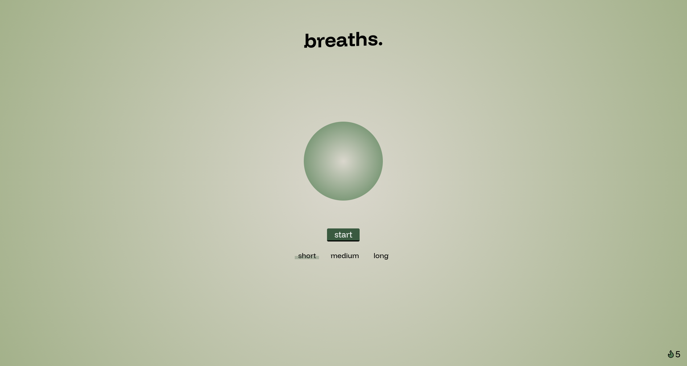

Projekte
Auf dieser Seite stelle ich eine Reihe an Projekten vor. Neben einigen Projekten welche aus der Universität heraus enstanden sind, gibt es auch eigene, private Projekte an die ich in meiner freien Zeit gearbeitet habe.

Breaths.
Dieses Projekt ist eine interaktive Webanwendung für geführte Atemübungen, die Nutzerinnen und Nutzern hilft, bewusster zu atmen und Momente der Ruhe in den Alltag zu integrieren. Im Fokus stand dabei eine klare, reduzierte Benutzeroberfläche, die ohne Ablenkung durch den Atemrhythmus führt.
Das Projekt zeigt meinen Anspruch, Funktionalität und Nutzererlebnis eng miteinander zu verbinden. Eine sauber strukturierte Codebasis und wartbare Architektur kombiniert mit einer intuitiven, visuell ruhigen Interaktion, die das eigentliche Nutzungserlebnis in den Mittelpunkt stellt.

Mavle (Student Education Platform)
Im Modul "Software Entwicklung & Programmierung" habe ich zusammen mit vier Gruppenmitgliedern eine Lehrplattform entwickelt, welche ähnlich zu Moodle ist.
Zu meinen Hauptaufgaben gehörten das Schaffen einer Client-Server-Architektur, die Registrierung, eine Quizfunktion und eine Kalenderfunktion.
Für unsere Desktopanwendung haben wir das Frontend-Framework JavaFX genutzt. Der Server basierte auf Spring Boot und als Datenbank haben wir uns für MySQL entschieden.
Durch unsere Bemühungen haben wir es von über 20 Gruppen in die Top 3 geschafft.

Fahrverstoß Ermittlung
Für mein Bachelorprojekt habe ich mich für das Thema "Vision-based Traffic Surveillance" entschieden und mittels Computer Vision diverse Fahrverstöße erkannt und ausgewertet.
Neben einer Fahrbahnerkennung zur Ermittlung von Mindestabstandverstößen habe ich an einer Ampelphasenerkennung, Blinkererkennung sowie einer Kennzeichenerkennung und -auslesung gerarbeitet.
Zur Erkennung von Kennzeichen habe ich ein eigenes neuronales Netz mittels YOLOv4 trainiert, um mir die Position der Kennzeichen ausgeben zu lassen.
Das Programm wurde in Python geschrieben und als Bibliotheken kamen OpenCV, SciMath und Tesseract OCR zum Einsatz.

Point Cloud Streaming System
Für meine Bachelorarbeit habe ich ein Point Cloud Streaming System entworfen, welches nicht nur Point Cloud Daten überträgt, sondern auch diverse Evaluierungsmethoden bereit stellt um die Effektivität von Streaminglösungen bewerten zu können.
Der Streaming-Client wurde in Python geschrieben und hat das Ziel, die Qualität des Streams an die Bandbreite des Nutzers anzupassen. Dadurch wird dem Nutzer eine kontinuierliche Wiedergabe der Point Cloud Szene gewährleistet.
Für eine detailliertere Beschreibung meiner Arbeit und dessen Ergebnisse stelle ich hier die Präsentationsfolien und die fertige Thesis zur Verfügung:

E-Bike Verleih System: Green Bikes
Durch die Inhalte des Moduls "Fortgeschrittene Programmierkenntnisse" konnte ich meine Fähigkeiten im objektorientierten Programmieren verbessern. Mit dem gewonnen Wissen hatte ich die Aufgabe, eine Konsolenanwendung für den Verleih von E-Bikes in C# zu entwickeln.
Neben der Verwaltung von E-Bikes und der Zuordnung von Buchungen, sollte das Programm über diverse Plausibilitätsprüfungen verfügen und Serialisierung unterstützen.
Im Vordergrund standen Wartbarkeit, Zuverlässigkeit, Korrektheit und Robustheit.

Finanz- und Budgetierungsapp: Coins
Mit Coins ist es mir möglich, meine Ausgaben immer im Blick zu behalten. Durch die intuitive Bedienung kann ich einfach und schnell eintragen, wofür ich mein Geld ausgebe. Es erlaubt mir, achtsam mit den eigenen Finanzen zu sein und Maßnahmen zu ergreifen, um meine Ausgaben zu optimieren.
Mit dieser App habe ich den ersten Schritt in die Entwicklung von mobilen Anwendungen gewagt. Durch den Einsatz von React Native kann die App auf sowohl iOS als auch Android Geräten genutzt werden. Die Veröffentlichung der App ist in Planung.
Um das Nutzererlebnis so hoch wie möglich zu halten, lasse ich mich von der Zeiterfassung-App Toggl Track inspirieren. Im Moment arbeite ich daran, die App um intelligente Funktionen zu erweitern.

Guse
Guse hat das Ziel, den eigenen Tagesablauf zu planen und bietet durch seine einfache Oberfläche einen unkomplizierten Weg, um Tagesaktivitäten schnell zum Tag hinzufügen zu können.
Dieses private Projekt diente ursprünglich zum Lernen von Angular, um die Arbeit meiner Werkstudententätigkeit stärker voranzutreiben. Die Anwendung wurde in TypeScript geschrieben und für die Darstellung der Webseite benutze ich SASS.
Für das Backend habe ich mich für einen NodeJS Server entschieden und nutze MongoDB zur Speicherung der Daten.

k-anki
Der Kindle E-Reader von Amazon bietet seinen Lesern die Möglichkeit, eine Definition und Übersetzung von Wörtern anzuzeigen. Mit k-anki werden die nachgeschlagenen Wörter erfasst und in ein für Anki verständliches Format gewandelt.
Mit der Merriam-Webster API weise ich jedem Wort eine kurze Definition zu und durch die DeepL API kann das jeweilige Wort in die eigene Sprache übersetzt werden.
Das Programm wurde in Python geschrieben und wertet den Inhalt der internen Kindle-Vokabeldatei aus. Die Bedienung erfolgt entweder über die Konsole oder über eine lokale Konfigurationsdatei.

Path
Um mich mit dem Frontend Framework React vertraut zu machen und gleichzeitig meine Lerninhalte der Universität zu strukturieren, habe ich Path entwickelt.
Ich nutze Path indem ich Fragen zum Lerninhalt aufschreibe und mit dem "Review" Modus die Schwierigkeit der Fragen beurteile. Die Anwendung nutzt das Prinzip spaced repetition um Fragen die mir schwerer fallen öfters anzuzeigen, als Fragen die ich mit Leichtigkeit beantworten kann.
Da es sich um ein komplexeres Projekt gehandelt hat, habe ich mich für TypeScript statt JavaScript entschieden. Die Fragen habe ich in einer MongoDB Datenbank gespeichert.

Raspberry Pi Roboter
Für mich ist Robotik schon immer ein interessantes Thema gewesen, weshalb ich mich dazu entschieden habe, einen kleinen Roboter zu bauen. Er wird durch ein Raspberry Pi gesteuert und besteht aus zwei Servos, einem Servocontroller, einer Kamera und etwas Pappe.
Im obigen Beispiel habe ich OpenCV genutzt um mir die Pixelposition des Stiftes ausgeben zu lassen. Im nächsten Schritt stelle ich den Drehwinkel der blauen Servos so ein, sodass der Stift immer mittig von der Kamera aus steht.
Die Kombination von physischen Komponenten und Software habe ich erstmals bei meiner Werkstudententätigkeit kennengelernt und bildet ein Fachgebiet, welches ich auch in Zukunft weiterhin verfolgen möchte.